Introduzione
La biblioteca veneziana di Francesco ed Ermolao Barbaro, una delle più importanti del ’400, comprendeva, all’inizio dell’ultimo decennio del secolo, 550 libri, fra incunaboli e manoscritti (di cui 150 greci), dai testi universitari di filosofia, teologia, diritto ai testi liturgici, ai padri della chiesa, ai classici, agli scritti militanti degli umanisti, inclusi i propri. Crocevia importante, come sempre più emerge dalla ricerca, della circolazione in particolare di testi greci nell’Italia umanistica, quella raccolta era innanzitutto il frutto di una tradizione familiare di studi ormai quasi secolare. 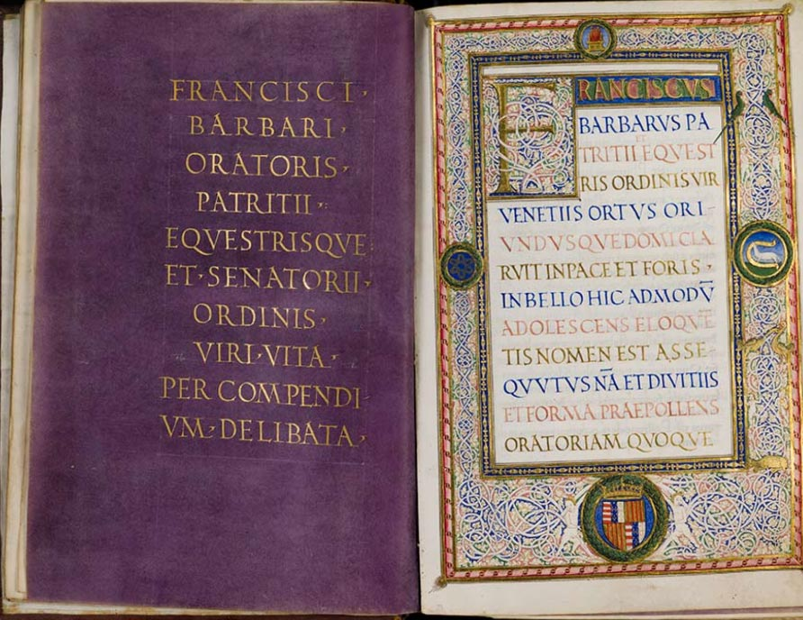 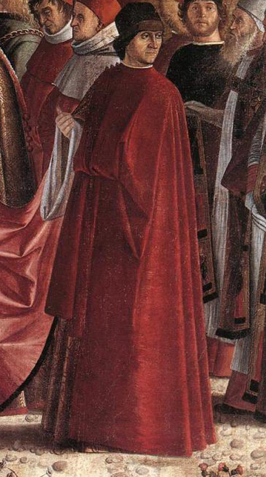 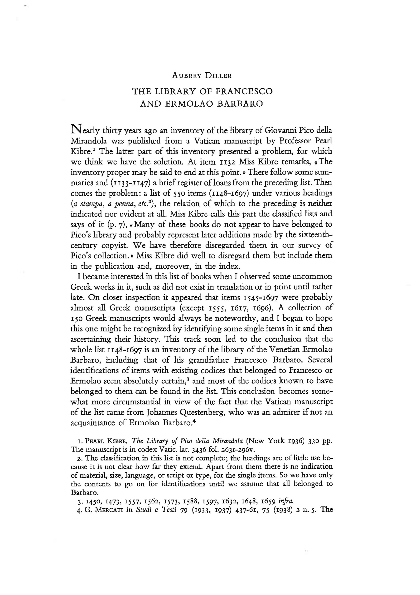
Da allora, le figure e le opere di Francesco, Ermolao, nonché di Ermolao il Vecchio (ca. 1410-1471), figlio di un fratello di Francesco, traduttore di Esopo, poi vescovo di Treviso e di Verona, sono state proficuamente studiate. Ma solo in anni recenti la ricerca, agevolata anche dalle risorse della rete, ha fatto significativi passi avanti sulla biblioteca, correggendo alcune proposte di identificazione, avanzandone numerose altre, più spesso fondate su sicuri riscontri paleografici, e anche grazie a ciò migliorando la comprensione dell’inventario e delle dinamiche di formazione e dispersione della raccolta. Molto resta da scoprire e da verificare; questo sito aspira a contribuirvi, rendendo agevolmente disponibili i dati acquisiti, permettendo di valutare il grado di probabilità delle identificazioni proposte e restando aperto ai progressi della ricerca.


L’inventario ↑
Il Vaticano latino 3436, raccolta di materiali eruditi pervenuta a Fulvio Orsini da Angelo Colocci, contiene ai ff. 263-296 il documento intitolato “Inventarius librorum Io. Pici Mirandulae”, pubblicato, con numerazione delle voci e un prezioso indice, da Pearl Kibre nel 1936.Kibre 1936, 118-297 (la parte Barbaro inizia a 268). Il manoscritto è consultabile online all’indirizzo: https://digi.vatlib.it/view/MSS_Vat.lat.3436. Una copia dell’inventario vaticano si conserva nell’Ambr. I 110 inf. (ff. 110-152), appartenuto a Gian Vincenzo Pinelli (Nuovo 2007, 135, 144); è occasionalmente utile dove il Vaticano è danneggiato (Kibre 1677).
Il catalogo pichiano termina però, come già osservato dall’editrice, a f. 284v con alcuni computi e la registrazione del prestito di alcuni dei libri elencati in precedenza (1133-1147).Relativo al periodo di permanenza dei libri di Pico presso il convento di San Marco a Firenze (1494-1498); Walter 2005.
Segue senza soluzione di continuità e senza un titolo proprio, ma chiaramente contraddistinto da una articolazione, prima assente, in sezioni o ‘classi’, l’inventario riferito da Diller ai Barbaro. Le ultime pagine (da f. 292r) sono vergate da una seconda mano, che ha anche corretto e annotato qua e là l’intero documento; è quella di Jakob Aurel Questenberg (ca. 1460-1527?), umanista tedesco per quarant’anni segretario e scriba alla corte pontificia. A lui si dovranno anche i segni a margine di vario tipo (– + ~) intesi, come pare, a evidenziare le voci di interesse. Se la parte Barbaro è da mettere in relazione con la presenza di Ermolao a Roma fra 1490 e 1493, pure neanche Questenberg, che sembra aver conosciuto l’umanista veneziano, mostra consapevolezza di tale provenienza. Il documento a noi giunto si data del resto probabilmente, in base alle filigrane, intorno al 1500,Due marche diverse, una (p.e. f. 296) quasi identica a Briquet, Sirène 13884 (Roma 1501), l’altra (p.e. f. 288) molto simile a Piccard, Blume 1541 (Roma 1499, 1500).
qualche anno dopo la morte di Ermolao, ed è quindi una copia o copia di copia, non esente da errori scribali, in cui sono confluiti due elementi eterogenei.L’inventariazione della biblioteca di Pico si ritiene eseguita a San Marco poco dopo la morte dell’umanista (novembre 1494); la presenza del registro di prestito implica però uno stato del documento di qualche tempo posteriore.
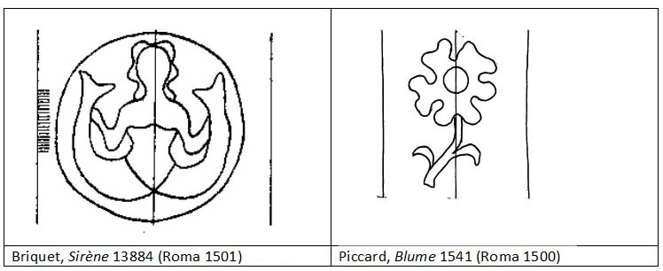

classi |
Kibre |
n° di item |
di cui 'M.' |
di cui 'B.M.' |
mss. |
edd. |
lingua |
a stampa |
1148-1289 |
142 |
4 |
99 |
103 |
39 |
L A T I N I |
a penna |
1290-1305 |
16 |
|
1 |
16 |
|
|
in iure a stampa |
1306-1341 |
36 |
11 |
10 |
21 |
15 |
|
a stampa |
1342-1354 |
13 |
|
|
|
13 |
|
libri ecclesiastici |
1355-1427 |
73 |
|
73 |
73 |
|
|
in papyro a mano |
1428-1439 |
12 |
|
|
12 |
|
|
in philosophia |
1440-1477 |
38 |
|
|
38 |
|
|
a mano in bambasina |
1478-1500 |
23 |
|
|
23 |
|
|
a stampa in bambasina |
1501-1504 |
4 |
|
|
|
4 |
|
in carta bona a mano |
1505-1510 |
6 |
|
|
6 |
|
|
a mano in carta bona |
1511-1521 |
11 |
|
|
11 |
|
|
in papyro a mano |
1522-1530 |
9 |
|
|
9 |
|
|
in humanita a penna in carta bona |
1531-1544 |
55 |
|
|
14 |
|
|
1545-1585 |
|
|
41 |
|
G R E C I |
||
in papyro |
1586-1605 |
20 |
|
|
20 |
|
|
in papyro |
1606-1669 |
64 |
|
|
64 |
|
|
in papyro |
1670-1671 |
2 |
|
|
2 |
|
|
quinterni desligati in carta bona |
1672-1677 |
6 |
|
|
6 |
|
|
in papyro quinterni |
1678-1697 |
20 |
|
|
20 |
|
|
totale latini |
|
550 |
|
326 (+3-1?) |
71 |
|
|
totale greci |
153 (+1-3?) |
|
|||||
Prospetto complessivo dell’inventario Barbaro |
|||||||
La lingua non è di norma specificata,Eccetto casi particolari: Kibre 1269, 1555, 1675, 1689 (1175: «... in gra(mmati)ca...», non «in greco» come riporta Kibre).
ma libri latini e greci sono per l’appunto, salvo casi particolari,Probabili latini nella parte greca: Kibre 1555, 1617 (non è latino, come credeva Diller, Kibre 1696); greco nella parte latina: Kibre 1246. Per Kibre 1261, 1262, 1274, 1437 l’inventario precisa trattarsi di ‘traduzioni’.
chiaramente separati, iniziando i greci tacitamente con Kibre 1545 «Aristidae Panat`h´anai». Solo di rado l’inventario specifica formati o altre fattezze codicologiche,Sono usati i termini: parvus (Kibre 1425), minimus (1426), magnus (1219, 1322, 1334, 1542), pulcherrimus (1424, 1425), quinterni (1178, 1184, 1429, 1617, 1673, e v. poi sotto nel testo).
ma sembra attento allo stato di completezza e conservazione dei libri;Si trovano le descrizioni: incompletus (Kibre 1179, 1191, 1230, 1416, 1476, 1616, 1621, 1629, 1631, 1646, 1697; completus 1277), imperfectus (1472, 1600, 1604, 1645, 1676), manchus (1641), sine principio / sine medio / sine fine (1481, 1605, 1644, 1673, 1682), caducus (1643, 1644, 1645, 1685), corrosus (1615), fragmentum, fragmentatus (1217, 1590, 1607, 1645, 1615).
alla fine figurano due brevi sezioni di manoscritti non rilegati (“quinterni desligati”), rispettivamente “in carta bona” e “in papyro”.
L’impressione è che l’inventario ‘fotografi’, rispettandone la topografia,A una impostazione topografica fa pensare anche il fatto si ritrovino in mano a uno stesso possessore libri contigui o vicini nell’inventario (sotto, note 21, 23).
una biblioteca reale, sommariamente organizzata in sezioni (forse corrispondenti ad armaria), ma comunque in modo imperfetto, almeno al momento della ricognizione (anche nelle classi ‘contenutistiche’ figurano titoli evidentemente fuori posto). La formulazione delle voci rivela di norma persona competente, che dove possibile si avvaleva, per l’identificazione del contenuto, delle note latine dei possessori, in particolare quelle di Francesco Barbaro.P.e. Kibre 1570, 1598.
Alla copia vaticana saranno da addebitare, almeno in parte, sviste, storpiature di nomi e titoli, nonché fusioni o scissioni di voci.
Questo sito offre una nuova edizione dell’inventario che mantiene la numerazione Kibre (1148-1697), correggendone alcuni erroriSoprattutto Kibre 1151, 1175, 1689.
ed evidenziando più chiaramente le correzioni e annotazioni, talora fuorvianti,Kibre 1184, 1696 (altri casi nella sezione pichiana).
di Questenberg. Cliccando sul numero della voce si accede alla scheda corrispondente; il colore blu (anziché rosso) distingue, nella parte latina, quelli che, stando alle considerazioni fatte, dovevano essere incunaboli. I segni > aggiunti a margine segnalano le voci per cui nella scheda sono proposte identificazioni con libri superstiti (o almeno specifiche edizioni).
La biblioteca ↑
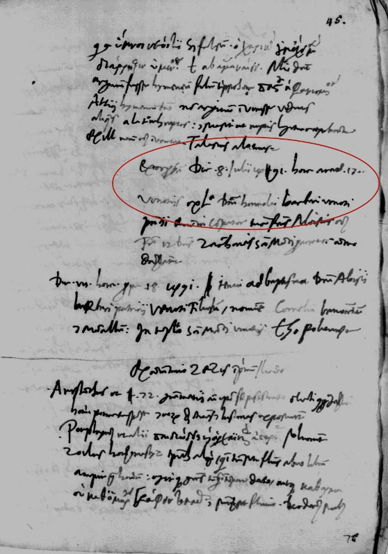 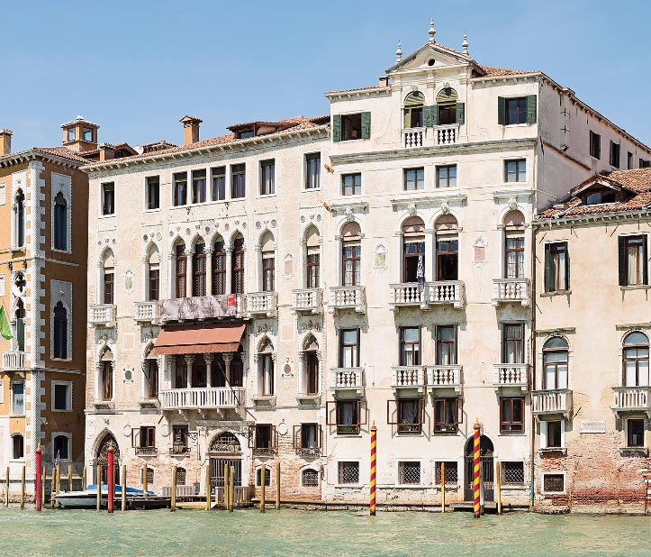 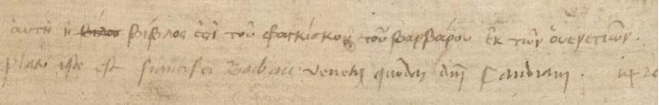 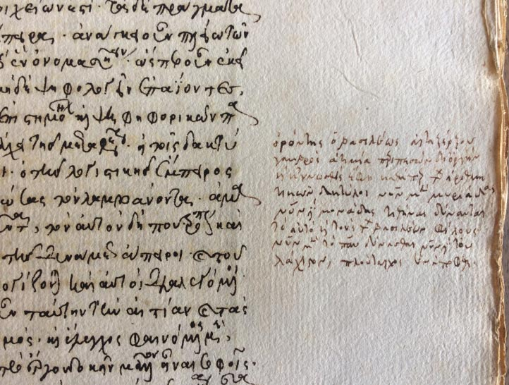
Anche la data della ‘fotografia’ che ce ne offre l’inventario può in qualche misura essere precisata. Termini post quem sicuri sono forniti da Kibre 1668, corrispondente a un manoscritto greco acquistato da Ermolao nell’agosto del 1489, e Kibre 1503, edizione stampata il 3 dicembre 1489.Altri incunaboli di identificazione e datazione critica ai fini della datazione dell’inventario sono Kibre 1168, 1282-1283, 1278.
D’altro canto, la ricognizione va datata a prima della fuoriuscita dalla biblioteca di alcuni libri che Ermolao dovette avere con sé a Roma, fra cui l’attuale Vat. gr. 1305 (Kibre 1557), da lui intensamente utilizzato per le Castigationes plinianae.Per altri libri verosimilmente giunti a Roma: Kibre 1557, 1571, 1588, 1590-1591, 1593, 1596, 1597, 1610a, 1618, 1619, 1663.
Tutto sommato, sembra ragionevole ipotizzare che l’inventario di cui ci è giunta una copia fosse stato redatto quando Ermolao era a già Roma, e forse quando seppe di non poter più tornare in patria (marzo 1491),
perché avesse contezza dei testi presenti nella biblioteca di famiglia e potesse segnalare chiaramente i volumi da spedirgli.


La dispersione ↑
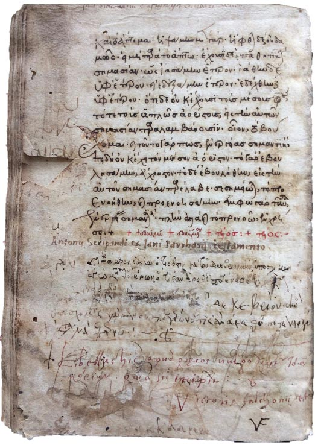 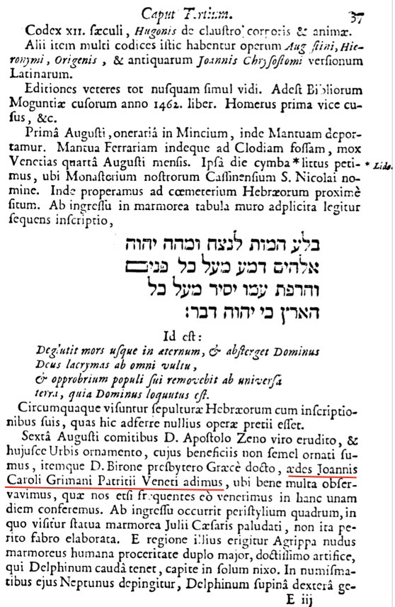 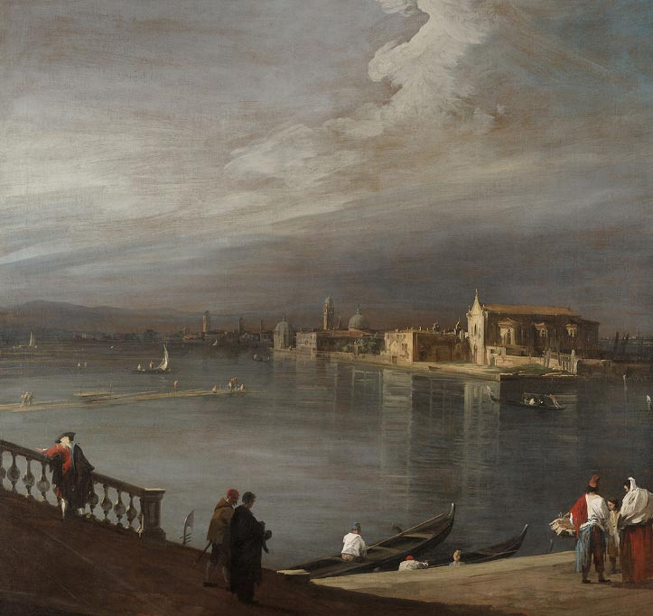
Un manipolo di libri Barbaro (quasi tutti di contenuto latamente aristotelico) risulta in possesso, da una parte, di Alessandro Farnese (il futuro papa Paolo III), amico di Ermolao, dall’altra, di Fulvio Orsini, bibliotecario dei Farnese; saranno probabilmente di quelli portati o spediti a Roma e trovatisi presso Ermolao al momento della morte. Ma preziosi codici cominciano presto a uscire anche dalla biblioteca veneziana.
Almeno una ventina di manoscritti, fuoriusciti forse negli anni difficili della Guerra della Lega di Cambrai (1508-1510), si possono (con maggiore o minore sicurezza) riconoscere in mano a personaggi che all’epoca erano studenti (o docenti) a Venezia o a Padova, quali Germain de Brie di Auxerre,Kibre 1545, 1547, 1566, 1599 (vel 1661), 1609 (vel potius 1620), 1622, 1624, 1631, 1646 (vel 1665), 1652, tutti indicati da Diller, a cui si possono aggiungere Kibre 1674,1686,1695b.
Giovanni Battista da Lion,Kibre 1634 (vel potius 1574), 1666, 1672 (vel potius 1610b), e più ipoteticamente Kibre 1552, 1608, 1683.
Vittorio Falconio (alias Vettor Fausto),Kibre 1579, 1614, 1656, 1657, 1658, 1671, 1672, 1674, 1676, 1682, 1687, 1691.
Leonico Tomeo.Kibre 1583, il ben noto codice planudeo dei Moralia di Plutarco Ambr. C 126 inf., annotato da Guarino e da Ermolao.
Un ruolo nella vicenda può aver giocato di nuovo Ianos Laskaris, venuto forse anch’egli allora in possesso di altri manoscritti Barbaro:Kibre 1694.
sappiamo che in qualità di ‘oratore’ del re di Francia a Venezia, donde partì allo scoppio della guerra, il 30 gennaio 1509, egli alloggiava proprio a Palazzo Barbaro.I diarii di Marino Sanuto, VII, Bologna 1882, col. 749 (febbraio 1509): (il conte di Pitiano) «alozà a San Stefano in cha’ Barbaro, dove stava l’orator di Franza, partito».
Il grosso della collezione comunque, trasmesso dapprima fra i beni ereditari della famiglia, dovette restare sostanzialmente compatto fino al ’700. Paul Canart ha pubblicato un πίναξ τῶν βιβλίων τοῦ ἐκλαμπροτάτου Βάρβαρου (Vat. lat. 7246, ff. 117-124),Edito da Canart 1985, 13-25; consultabile online all’indirizzo: https://digi.vatlib.it/view/MSS_Vat.lat.7246
redatto in greco a Venezia fra 1567 e 1575, riferendolo giustamente a Daniele Barbaro (1514-1570), cardinale e patriarca di Aquileia, studioso di Vitruvio, amico e committente del Palladio, che discendeva dall’omonimo fratello di Ermolao, e di questi curò anche alcune edizioni postume.Da Daniele possono essere passati a Ippolito Capilupi, nunzio apostolico a Venezia dal 1560 al 1564, Kibre 1184 e 1272, se sono corrette le identificazioni di essi con due manoscritti della Biblioteca Nazionale di Roma.
Esso elenca, oltre a edizioni a stampa, 58 manoscritti greci, solo 15 dei quali riconoscibili nell’inventario Kibre (di cui peraltro spesso arricchisce utilmente le descrizioni),Kibre 1546, 1550,1562, 1563, 1565, 1570, 1573, 1577, 1578, 1620, 1640, 1645, 1648, 1649, 1650, 1653, 1654, 1659, 1668, 1670.
gli altri corrispondendo a codici recentissimi, del XVI secolo. Ma sia gli uni che gli altri condividono in seguito vicende e approdi con numerosi altri manoscritti, greci e latini, risalenti a Francesco ed Ermolao, che devono quindi essere appartenuti anch’essi a Daniele.Così rifletteva già Canart 1985, 16; diversamente, in parte, Raines 2015, 103.
Erede della biblioteca, illustre all’epoca, di Daniele Barbaro fu il fratello Marcantonio, uno dei cui figli patriarchi di Aquileia, probabilmente Ermolao (m. 1622), lasciò per testamento alla biblioteca Vaticana 10 manoscritti greci, 9 dei quali si riconoscono nel pinax; sono quasi tutti recentissimi, ma uno di essi, Vat. gr. 1619 (Manuele Paleologo, Senofonte), risale al nucleo quattrocentesco (Kibre 1648). Studiando questo gruppo, Canart ha anche individuato, applicata però solo a codici cinquecenteschi, una legatura caratteristica, da lui definita «de type Barbaro» (del 1570 ca.).
Si può probabilmente precisare che, dopo la morte di Zan Carlo Grimani (1714), il residuo della collezione, assottigliata dai prelievi di Apostolo Zeno e Recanati, passò al nobile Gerardo Sagredo, i cui libri furono messi in vendita dopo la sua morte (1738) dal libraio Albrizzi. Da questo acquistarono i citati codici greci e latini Barbaro di San Michele di Murano dapprima Giovan Battista Mittarelli, e poi, all’asta del 1747 (come mostrato da Helmut Boese), Angelo Calogerà. Altri, latini, potrebbero aver essere finiti in mano ad altri acquirenti dell’Albrizzi individuati da Boese, Johann Christian Goetze, che comprava per la biblioteca di Dresda,Kibre 1198, 1219. e Franz Joseph von Hahn, vescovo di Bamberg.Kibre 1189, 1484; oltre alle Dionisiache di Nonno, verosimilmente il codice visto da Montfaucon presso Zan Carlo Grimani (Berol. Ham. 455 [406]).
Ultimo atto della complessa vicenda, la diaspora, fra 1810 e 1971, del patrimonio librario di San Michele di Murano,Mioni 1958, 321-329; Merolla 2010, 32-40. che ha allargato da San Pietroburgo a Chicago l’orizzonte di chi cerca di ricostruire, con la guida dell’antico inventario, la biblioteca deposito degli studi, degli interessi, delle esperienze di una famiglia protagonista dell’umanesimo veneziano.


inventario Kibre (1490 ca.) |
pinax Canart (1570 ca.) |
biblioteca Zan Carlo Grimani (Montfaucon 1698) |
possessore nel ’700 |
collocazione attuale |
1584. Chrysostomi moralia supra ioannem. |
|
Codex Joannis Chrysostomi in Joannem |
Apostolo Zeno |
Vind. suppl. gr. 5 |
|
23. Ἤρωνος Ἀλεξανδρέως πνευματικῶν βιβλία, δύο· ἔτι δὲ Πάππου Ἀλεξανδρέως συναγωγῶν... |
Heronis πνευματικὰ... Pappi Alexandrini, συναγωγῶν τρίτον... |
Apostolo Zeno |
Vind. suppl. gr. 12 (ril. Barbaro) |
|
11. αἱ κατηχήσεις τοῦ Κυρίλλου. Συμεὼν... Θεσσαλονίκης περὶ τῶν μυστηρίων τῆς ἐκκλησίας. |
codes recens, Cyrilli Catecheses, Item Symeonis Thessalonicensis de Ecclesiasticis Mysteriis. |
Apostolo Zeno |
Vind. suppl. gr. 14 (ril. Barbaro) |
|
22. εἰς τὰ τοῦ Ἰώβ, ἐξηγήσεις πολλῶν διδασκάλων. |
Catena in Job Graece. |
Apostolo Zeno |
Vind. suppl. gr. 16 (ril. Barbaro) |
|
12. ἐκλογὴ καὶ σύνοψις τῶν βασιλικῶν ξ´ βιβλίων... |
Tituli legales Imperatorum Constantinopolitanorum. |
Apostolo Zeno |
Vind. suppl. gr. 26-27 (ril. Barbaro) |
|
|
Codex recens Maximi in quo multa non edita. |
Apostolo Zeno |
Vind. suppl. gr. 41 |
|
36. Ἰωάννου... τοῦ Καντακουζηνοῦ... κατὰ Μωαμεθ. |
Codex recens Jοannes Cantacuzenus contra Muhammedem. |
G.B. Recanati |
Marc. gr. 577 (681)
|
1603b. Sophoclis Tragoediae septem. |
|
Homeri, Euripidis, Sophoclis et Aeschyli codices.
|
G.B. Recanati |
Marc. gr. 617 (810) |
1607. Iliada fragmentata. |
|
G.B. Recanati |
Marc. gr. 459 (797) + IX 3 (1390) |
|
1632. homeri Vatrachomio machia. et odissia homeri. |
|
G.B. Recanati |
Marc. gr. 613 (868) |
|
1641a. Euripedes manchus. |
|
G.B. Recanati |
Marc. gr. 620 (890) |
|
(?) 1675. Donatus graecus. |
|
Manuelis erotemata in codice XIV. saeculi; sed haec scripta sunt erasis et deletis pene aliis. |
San Michele (122) |
Sankt-Peterburg, Inst. Ross. Ist. Akad. Nauk, 1/666 (palinsesto) |
1611. Claudii Ptolemaei Geographia. |
|
In codice recenti Ptolemaei Cosmographia mutila. |
San Michele (15) |
Chicago Newberry Libr. 39 |
(?) 1546. Gregorii expositio in Mattheum et aliorum in quosdam alios. |
26. τὸ πρῶτον βιβλίον τοῦ κατὰ Ματθαῖον ἐξηγημένον παρὰ Γρηγορίου Νύσης καὶ ἄλλων τινῶν. διαφόρων |
Catena in Mattheum in codice membranaceo XI. saeculi. |
San Michele (120) |
Marc. gr. I 61 (1201) |
|
58. ... Γρηγεντίου ἀρχιεπισκόπου γενομένου πόλεως Τεφρῶν διάλεξις μετὰ Ἰουδαίου Ἐρβᾶν τοὔνομα |
S. Gregentii archiepiscopi, Dialexis seu Dialogus cum Iudaeo nomine Herban |
San Michele (205) |
Osimo, Biblioteca del Collegio Campana, cod. LIII |
(?) 1578. Euangelia quaedam et pr(i)mum Matthei |
28. τετραευαγγέλιον βέμβρανον |
Novum Testamentum Graece XI. saeculi |
San Michele (241) |
Marc. gr. I 60 (950) |
|
52. Θεωδωρήτου εἰς τοὺς ψαλμοὺς τοῦ Δαυὶδ ἐξήγησις |
Codex membranaceus X. saeculi, Theodoretus in Psalmos |
San Michele (242) |
Marc. gr. II 184 (1179) |
|
54. Ἱστορία Βαρλαὰμ καὶ Ἰωάσαφ |
Historia Barlaam & Josaphat in fine mutila… |
San Michele (243) |
New Haven,Yale Univ. Beinecke 266 (ril. Barbaro) |
|
|
Nonni Dionysiaca, codex recens elegans |
Fr.J. von Hahn (91. Dionysiacon poema graece) |
Berol. Hamilton 455 (406) |
|
Sinossi codici greci Barbaro passati per la biblioteca di Zan Carlo Grimani) |
||||